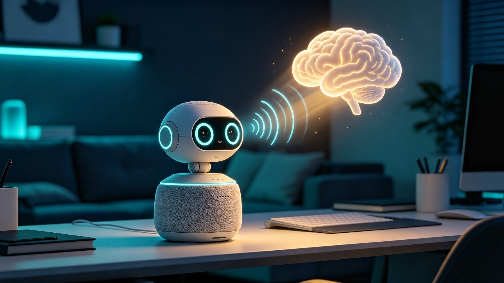

听懂人意的智能硬件机器人
提案将前沿大模型接口转化为一台可量产的桌面机器人：它能录音、理解意图、调用工具，并以自然语音回答。核心价值不是“把聊天机器人装进外壳”，而是让硬件成为家庭、办公与照护场景中的低门槛智能入口。

项目定位
前沿语音大模型已经从“语音转文字再合成语音”的拼接流程，演进到低延迟语音输入与语音输出。OpenAI Realtime API 被用于构建快速 speech-to-speech 体验，Azure 文档也明确其适合语音助手、实时翻译和客服等低延迟交互场景。[1][2]
机会判断
语音重新成为入口
实时语音接口减少了传统链路中的转写、推理、合成割裂感，用户不必学习菜单或 App 层级，直接说出需求即可开始交互。
意图识别变成动作层
大模型工具调用把“查天气”“记录会议”“提醒吃药”“控制设备”拆成结构化参数，让机器人不止回答问题，也能连接外部服务。
硬件承载信任感
相比纯 App，桌面机器人有固定位置、可见状态和可触摸的物理控制，更适合家庭、老人、儿童与办公前台等长期场景。
产品概念
一句话定义
EchoMate 灵犀是一台“会听、会判断、会回应、会执行”的语音智能硬件，用自然对话承接日常信息需求与轻量任务。
首发版本不追求复杂仿生运动，而是强化麦克风阵列、扬声器、灯效、隐私按键和稳定联网，把核心体验压到最短路径。
- 外观：圆角方形底座与可转头部，降低机械复杂度。
- 输入：麦克风阵列、物理静音键、可选触摸区域。
- 输出：全频扬声器、环形灯效、轻量表情屏。
- 计算：本地唤醒词与降噪，云端大模型处理复杂意图。
- 扩展：USB-C、蓝牙、Matter 或红外模块，支持智能家居控制。
核心体验
| 体验模块 | 用户感知 | 技术实现 | 首版边界 |
|---|---|---|---|
| 录音与听觉前端 | 远场唤醒、可打断、嘈杂环境下仍能听清主要指令。 | 麦克风阵列、AEC 回声消除、VAD 端点检测、唤醒词本地处理。 | 不做全天候明文上传；默认只上传唤醒后的片段。 |
| 意图识别 | 用户无需说固定口令，例如“帮我把明天上午十点的会记一下”。 | 大模型将语音转成任务类型、槽位参数、风险等级与澄清问题。 | 高风险动作需二次确认，例如付款、开门、发送信息。 |
| 智能问答 | 能像人一样追问上下文，回答家庭百科、办公资料、学习辅导。 | Realtime 语音模型承接低延迟回答，RAG 模块接入私有资料库。 | 涉及医疗、金融、法律时给出边界提示与人工咨询建议。 |
| 工具执行 | 一句话完成提醒、查询、播放、设备控制、会议纪要。 | 函数调用或 MCP 工具层连接日历、IoT、知识库、客服系统。 | 首版开放白名单工具，避免任意外部动作带来安全风险。 |
AI 接口组合
接口层采用“实时语音模型 + 多模态 Live 模型 + 工具调用模型”的组合。Gemini 3.1 Flash Live 通过 Gemini Live API 面向实时语音与视觉代理，官方介绍强调其可处理周围信息并以对话速度回应；Gemini Live API 文档也将低延迟语音和视觉交互列为核心能力。[3][4] Anthropic 的工具使用文档说明，模型可根据请求决定调用客户端工具或服务端工具，这为“把自然语言转成设备动作”提供了工程范式。[5]
低延迟语音层
负责自然对话、语音输出、打断处理和情绪语调保留，是机器人“像在听”的基础。
意图路由层
把用户话语分类为问答、任务、设备控制、资料检索、提醒或澄清，并输出结构化参数。
工具执行层
连接日历、智能家居、知识库、企业系统，所有写入型动作都经过确认和日志记录。
flowchart LR
A[用户语音] --> B[本地唤醒词与降噪]
B --> C[录音缓冲与 VAD]
C --> D[实时语音大模型]
D --> E{意图路由}
E -->|知识问题| F[RAG 知识库]
E -->|设备控制| G[IoT / Matter / 红外工具]
E -->|日程与提醒| H[日历与任务工具]
E -->|不确定| I[澄清追问]
F --> J[语音回答]
G --> K[二次确认与执行]
H --> K
I --> J
K --> J
交互流程
家庭场景
用户说：“灵犀，提醒我晚上八点给妈妈打电话，顺便查一下明天去医院路上会不会下雨。”机器人识别出两个意图：创建提醒与天气查询，先复述确认，再给出简短结果。
办公场景
会议结束后用户说：“把刚才讨论的三件事整理成纪要，发给项目群之前让我看一眼。”机器人调用录音转写与摘要模型，生成可编辑草稿，不直接外发。
教育场景
孩子问：“为什么月亮有时候像香蕉？”机器人用分层解释回答，并通过追问确认年龄段，避免过度技术化。
照护场景
老人说：“我好像忘了今天有没有吃药。”机器人查询本地提醒记录，必要时联系家庭成员，而不是给出医疗判断。
sequenceDiagram
participant U as 用户
participant R as EchoMate 灵犀
participant M as 大模型接口
participant T as 工具服务
U->>R: 说出自然语言需求
R->>R: 本地唤醒、降噪、录音缓冲
R->>M: 发送语音流与上下文
M->>M: 识别意图与缺失信息
alt 信息足够
M->>T: 调用查询或执行工具
T-->>M: 返回结果
M-->>R: 生成语音回答
else 信息不足
M-->>R: 生成澄清问题
end
R-->>U: 用语音和灯效反馈
硬件方案
| 部件 | 建议配置 | 设计理由 |
|---|---|---|
| 麦克风 | 四麦或六麦阵列，支持波束成形与回声消除。 | 远场语音是第一体验，硬件采集质量直接影响大模型理解。 |
| 扬声器 | 单元朝前，底座被动振膜增强低频。 | 回答、提醒、陪伴都依赖稳定清晰的人声表现。 |
| 灯效 | 头部环形 RGB 灯带，状态映射为聆听、思考、回答、静音。 | 可见状态降低“设备是否在听”的不安感。 |
| 算力 | 低功耗 NPU 或主控芯片运行唤醒词、降噪与基础分类。 | 把隐私敏感与高频轻任务留在本地，复杂推理交给云端。 |
| 隐私控制 | 物理断麦键、录音指示灯、本地记录面板。 | 硬件级控制比软件开关更容易被用户信任。 |
差异化设计
可打断的回答
用户说“停一下”或直接提出新问题时，机器人立即停止播放并切换到新意图，避免传统音箱式单向播报。
分级确认机制
查询类请求直接回答，写入型请求复述确认，高风险请求要求物理触碰或二次语音确认。
场景记忆卡片
用户可创建“家人偏好”“办公室规则”“孩子年级”等本地记忆卡片，机器人回答时自动引用。
离线兜底
断网时仍支持闹钟、静音、蓝牙音箱、设备状态播报等基础能力，不把所有价值绑定到云端。
商业模式
硬件销售
以家庭版和办公版切入，家庭版强调陪伴与提醒，办公版强调会议纪要、前台问答和资料查询。
订阅服务
基础问答免费额度，高级语音模型、长时录音摘要、私有知识库和多设备联动进入订阅。
行业套件
为养老机构、教育空间、零售门店提供定制知识库、后台管理和设备批量运维。
MVP 路线
原型验证
使用开发板、麦克风阵列和云端 Realtime API 形成可对话样机，验证唤醒、录音、打断与语音回答体验。
场景封装
优先做提醒、问答、天气、日历、会议摘要、智能家居控制六类能力，每类限定明确的成功与失败反馈。
小批量试用
选择家庭与小型办公室两类用户，观察用户是否持续把它放在桌面中心位置，并记录常见误触发与误识别。
量产准备
固化声学结构、热设计、隐私指示、配网流程和 OTA 机制，建立模型服务成本与硬件 BOM 的组合账本。
风险与边界
| 风险 | 表现 | 控制方式 |
|---|---|---|
| 隐私担忧 | 用户担心设备长期监听或上传家庭对话。 | 物理断麦、唤醒后上传、录音可见、敏感记录本地优先。 |
| 幻觉回答 | 模型在不知道答案时编造信息。 | 对事实类问题引入检索，低置信度时明确说“不确定”。 |
| 误执行 | 把闲聊误判为设备控制或信息发送。 | 动作白名单、写入前复述、高风险动作物理确认。 |
| 成本失控 | 长时语音对话带来较高模型调用费用。 | 本地唤醒与短任务路由，订阅分层，低价值长对话降级处理。 |
提案结论
EchoMate 灵犀的可行性来自三个趋势的叠加：实时语音接口降低对话延迟，多模态 Live API 为后续视觉理解预留空间，工具调用让自然语言具备执行能力。首发版本应克制硬件复杂度，把体验集中在“听得清、懂得准、答得自然、做事可靠”四件事上。
如果以三个月原型、六个月小批量、十二个月行业版本为节奏推进，这台机器人可以先成为桌面语音助手，再逐步进入家庭照护、办公协作和门店服务场景。